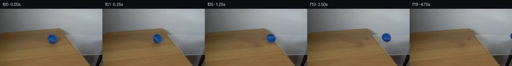

![首帧]()

Round 00
2026-11-04T21:15:15.459142+00:00像素候选变化代码 +174/−0inspection 更新
pixels f6d5ffd2680e186e · code b59b5e6c4f7f2cad
查看本轮 generate.py 真实 diff
--- previous/generate.py +++ current/generate.py @@ -0,0 +1,174 @@ +#!/usr/bin/env python3 +"""Generate the 20-frame PixelWorld animation using only local pixel operations.""" + +from pathlib import Path + +import cv2 +import numpy as np +from PIL import Image, ImageDraw + +import artifact_io + + +ROOT = Path(__file__).resolve().parent +H, W = 144, 256 +N = 20 +BALL_CENTER = np.array([132.0, 76.0], dtype=np.float32) + + +def smoothstep(edge0, edge1, value): + u = np.clip((value - edge0) / (edge1 - edge0), 0.0, 1.0) + return u * u * (3.0 - 2.0 * u) + + +def prepare_background_and_ball(source): + """Numerically segment the source ball and reconstruct the wood beneath it.""" + src = source.astype(np.float32) + yy, xx = np.mgrid[:H, :W].astype(np.float32) + radius = np.hypot((xx - BALL_CENTER[0]) / 1.03, yy - BALL_CENTER[1]) + + # Blue chroma isolates the ball from the warm wooden plane. A geometric + # taper only prevents distant cool wall pixels from being selected. + blue_chroma = src[..., 2] - 0.45 * src[..., 0] - 0.55 * src[..., 1] + chroma_alpha = smoothstep(1.5, 52.0, blue_chroma) + radial_alpha = 1.0 - smoothstep(11.7, 14.0, radius) + alpha = chroma_alpha * radial_alpha + alpha = cv2.GaussianBlur(alpha, (0, 0), 0.42) + alpha[alpha < 0.004] = 0.0 + alpha = np.clip(alpha, 0.0, 1.0) + + # Remove the original ball and its close contact fringe. TELEA uses only + # surrounding pixels and preserves the local direction of the wood grain. + remove = np.zeros((H, W), np.uint8) + cv2.ellipse(remove, (132, 76), (16, 15), 0, 0, 360, 255, -1) + background = cv2.inpaint(source[..., ::-1], remove, 3.0, cv2.INPAINT_TELEA)[..., ::-1] + + # Undo the original edge mixture against the reconstructed background to + # get a clean foreground estimate. Only alpha-supported pixels matter. + a = alpha[..., None] + foreground = np.zeros_like(src) + supported = alpha > 0.035 + foreground[supported] = np.clip( + (src[supported] - (1.0 - a[supported]) * background[supported]) + / np.maximum(a[supported], 0.035), + 0.0, + 255.0, + ) + # Keep very faint fuzzy pixels stable rather than amplifying noise. + faint = (alpha > 0.0) & ~supported + foreground[faint] = src[faint] + premultiplied = foreground * a + return background, alpha.astype(np.float32), premultiplied.astype(np.float32) + + +def trajectory(frame_index): + """Smooth ease-in followed by an almost constant rightward surface roll.""" + if frame_index == 0: + return BALL_CENTER.copy(), 0.0 + u = frame_index / (N - 1) + travel = 132.0 * (u ** 1.06) + center = BALL_CENTER + np.array([travel, -8.0 * travel / 132.0], np.float32) + # Clockwise image rotation for a sphere rolling to screen-right. + angle_degrees = -np.degrees(travel / 11.2) + return center, float(angle_degrees) + + +def add_contact_shadow(frame, center): + """Darken a small Gaussian at the support point, softer over clear glass.""" + yy, xx = np.mgrid[:H, :W].astype(np.float32) + dx = xx - center[0] + dy = yy - (center[1] + 10.7) + gaussian = np.exp(-0.5 * ((dx / 7.8) ** 2 + (dy / 2.15) ** 2)) + + # Projected table/glass boundary is x ~= 0.82*y + 107. Blend opacity + # while the ball straddles it; glass retains a weaker visible shadow. + boundary_x = 0.82 * (center[1] + 10.7) + 107.0 + glass_mix = smoothstep(boundary_x - 11.0, boundary_x + 11.0, center[0]) + strength = 0.24 * (1.0 - glass_mix) + 0.125 * glass_mix … diff truncated; 87 more lines …